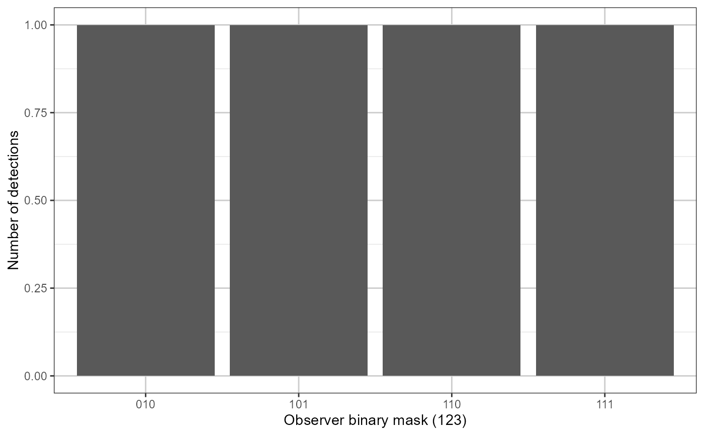
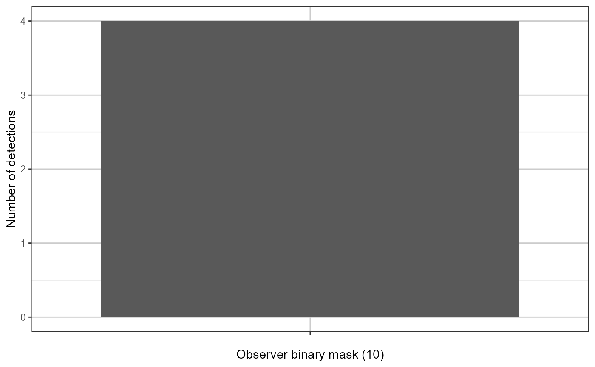

Counts and visualises detection agreement patterns across multiple observers. Each row is encoded as a binary string representing each observer's detection decision, and the frequency of each unique pattern is returned as a data frame and displayed as a bar chart.
Arguments
- ch
A data frame containing observer detection columns. Each detection column should contain binary values (0/1).
- detect_prefix
Either a single character string used as a pattern to identify detection columns by name (e.g.
"detect_observer"will matchdetect_observer1,detect_observer2, etc.), or a character vector of explicit column names (e.g.c("detect_obs1", "detect_obs2")). Defaults to"detect_observer".- ...
Additional ggplot2 layers (e.g. scales, themes, annotations) passed to the plot via
+.
Value
A data frame with two columns:
- category
A factor giving the binary string pattern of observer detections (e.g.
"101"means observers 1 and 3 detected, observer 2 did not).- count
An integer giving the number of rows matching that pattern.
Details
When detect_prefix is a single string, columns are identified by
grepl(detect_prefix, names(ch)). When detect_prefix is a
character vector of length > 1, those column names are used directly.
Examples
ch <- data.frame(
detect_observer1 = c(1, 0, 1, 1),
detect_observer2 = c(1, 1, 0, 1),
detect_observer3 = c(0, 0, 1, 1)
)
# Default
result <- multiObserverDetectionCount(ch)

# With extra ggplot2 layers
result <- multiObserverDetectionCount(ch,
ggplot2::theme(axis.text.x = ggplot2::element_text(angle = 45)))
